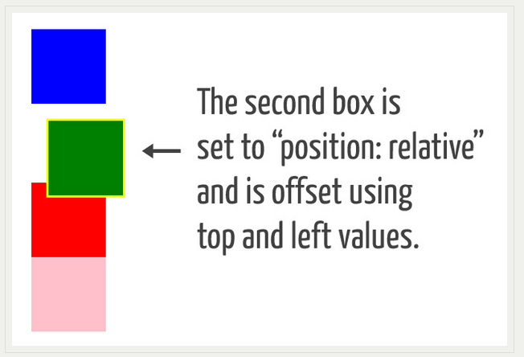
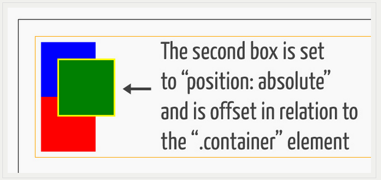
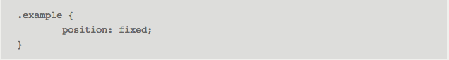

Today's Topic
Differences between relative, absolute, and fixed positioning?
Positioning
Imagine that you plan on designing a travel brochure, like you might have done in High School. One of your concerns revolved around the proper placing of all the different features you planned in your brochure. These might be: The Title, Borders, Cover Image, Different Sections of Text and their associated headings and related images.
You might want to print out items and move them around on a background to see how they look - to help you experiment and design.
The process of communicating to the computer where different aspects of your page will display. These aspects might be logos, lines of texts, background colors, images, lines to indicate a transition, navigation links, you name it - anything that visually shows up on the page.
This process involves positioning items and having a certain amount of creative control over each item.
The same is true of computer web design.
We will discuss relative, absolute, and fixed positioning and how these affect your ability to create amazing web pages!
First Off
It is important to know that each item/element (image, text, title, etc), is displayed in the order that they appear in the lines of code and by default they take up the entire width of the screen. Writing code this way will produce lines of items, one right after the other on the screen.
This may be nice and at pleasing when first programming, however after a short period of time you have beautiful ideas and want to see them come to light. This is where positioning is key.
I. Relative
Elements that have been modified using position: relative; behave at first just like described above. They appear one right after another and take up an entire line. However, they are subject to four "position values":
topbottomrightleft
These allow you to move the elements from their normal position, the next line relative to other elements, in any of the following four directions: upwards, downwards, left or right by any given number of pixels.
II. Absolute
Elements that have been modified using position: absolute; have been removed from the normal flow of the document. They appear to hover in one place on the screen as the rest of the document appears to "slide" underneath them.
They are again subject to four "position values":
topbottomrightleft
These allow you to move the elements from their normal position, the next line relative to other elements, in any of the following four directions: upwards, downwards, left or right by any given number of pixels.
NOTE: When this property has been applied to an element, the element has been removed from the "normal flow" of all of the rest of the elements. The rest of of your items will be arranged on your page the same as if the Absolutely Positioned Object were missing.
III. Fixed
After you have placed the following minimum code, the same four position value apply:
Elements that have been modified using position: fixed; are very similar to those of absolute with two differences:
- The element/item/object's "fixedness" is always in relation to the viewport. So changing a parent element won't affect this setting.
- These elements/items/objects will not move when the document is scrolled through.
As way of an example:
The "Learn Web Design" promotion bar at the top of the screen stays "fixed" to the top as you scroll through the document.